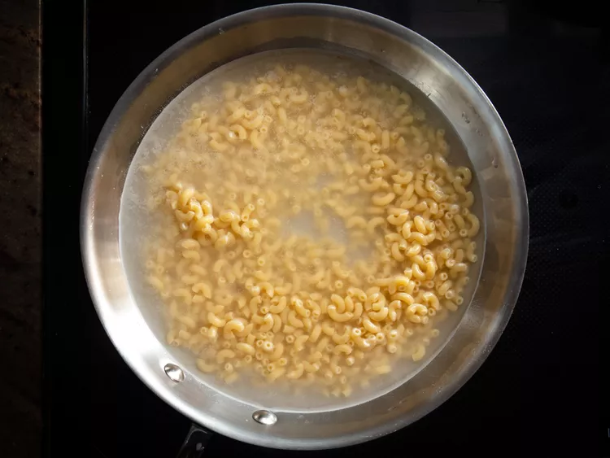
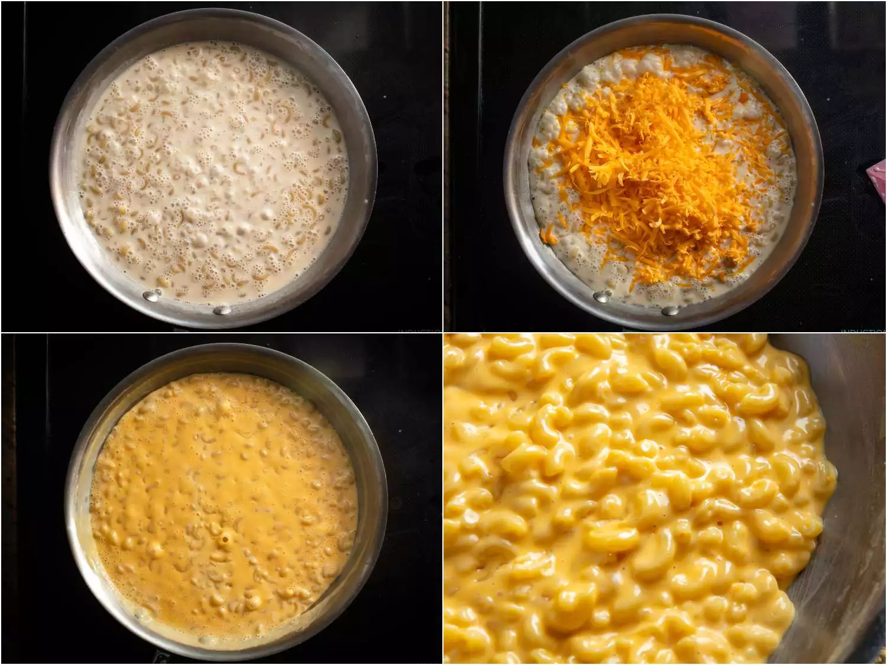

Macaroni and Cheese

Easy macaroni and cheese, this boxed classic has been spruced up in this recipe.
Ingredients
- 6 ounces (170g) elbow macaroni
- 6 ounces (180ml) evaporated milk
- 6 ounces (170g) grated mild or medium cheddar cheese, or
any good melting cheese, such as Fontina, Gruyère, or Jack.
- Salt
Directions
- Place macaroni in a medium saucepan or skillet and add just enough cold water
to cover. Add a pinch of salt and bring to a boil over high heat, stirring
frequently. Continue to cook, stirring, until water has been almost completely
absorbed and macaroni is just shy of al dente, about 6 minutes.

- Immediately add evaporated milk and bring to a boil. Add cheese. Reduce heat
to low and cook, stirring continuously, until cheese is melted and liquid has reduced
to a creamy sauce, about 2 minutes longer. Season to taste with more salt and serve immediately.

Notes
As always, feel free to put your own spin on this and every recipe, try adding hot sauce, mustard powder, or a pad of butter to enhance this dish.
This recipe and all images are credited to Serious eats, and J Kenji Lopez-alt.